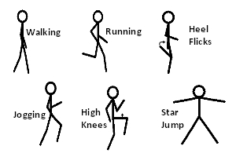
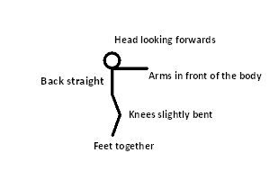
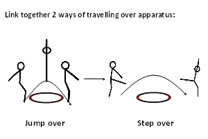

|
Literacy Keywords
|
Jump, Run, Speed, Movement, Jogging, Travelling |
Citizenship
|
Awareness of space, Personal |
Numeracy
|
Counting |
|
Risk Assessment
|
- Area safe and checked - any hazards removed
- Equipment safe and checked
- Safety information highlighted to participants
- Equipment suitable for participants
- Suitable clothing and footwear worn by participants
|
ICT
|
|
Equipment
|
Floor mats, Benches, Stools, Hoops
|
| Warm Up | Movement Development - diagram | Strand : KUFH | Duration : 3 - 5 | Teaching Points |
- Ask all children to spread out and find a space to stand in
- Ask the children to move on the spot in different ways - walk, jog, run, hop, star jumps
| - Aim to increase heart rate
- Build up speed of exercises gradually
- Perform the actions with good quality
|
| Progression | Teaching Points |
- Move around a set area in different ways - walk, jog, run, skip, sideways, hop
| - Look where you are going
- Head up
- Build up speed of exercises gradually
|
| To make activity easier |
- Give the children marker spots to put into a space and stand on to have a go at the activities
|
| Skill Development | Animals - Different Speeds | Strand : AD | Duration : 5 - 10 | Teaching Points |
- The aim of the activity is to get the children thinking about and moving at different speeds
- Ask the children to move around the area in the form of an animal, incorporating elements of gymnastics into the animals. See notes and diagrams:
- Frog - The children tuck down onto the floor and leap forward extending their body into a straight position and back down to tuck repeatedly . This is fast speed
- Rabbit - Tucking down onto the floor, place hands forward on the floor in front of the body and tuck legs up to join the front half of the body, bunny hopping into a space. This is medium speed
- Crab - Walking around the area on all fours with stomach facing the ceiling (back support shape). This is slow speed
- Camel - Walking around the area in a space on all fours with bottom in the air to create the camel hump, and legs kept straight. This is medium speed
- Kangaroo - Standing up ask the children to use their legs to create really high bounces to move around. This is fast speed
| - Encourage the child to control the speed of the movement
- Ensure the children are using the correct technique for the movement
- Ensure the children bend their knees to cushion their landing for any jumping actions
- Keep head and eyes up and looking around to avoid collision
|
| Progression | Teaching Points |
- Ask the children to create their own animal using a slow speed
- Ask the children to create their own animal using a medium speed
- Ask the children to create their own animal using a fast speed
| - Look for creative ideas and show the best ones to the rest of the class
|
| To make activity harder |
|
| To make activity easier |
|
| Sequence | Link Together Different Ways of Travelling - Apparatus - diagram | Strand : AD SA | Duration : 10 - 15 | Teaching Points |
- Ask the children to create a sequence linking together different ways of travelling they have learnt in the lesson (or in previous lessons), incorporating moving under and over different types of apparatus within the sequence
- The sequence should include:
- Linking together 2 ways of travelling under apparatus
- Linking together 2 ways of travelling over apparatus
- Set out different apparatus the children can use to create their routines - Stools, hoops, tables, benches
| - Encourage the child to show control over the movement
- Encourage the children to be creative and use their imagination when using apparatus
- Encourage the use of good travelling techniques
- Ensure all apparatus is used appropriately
- Ensure the apparatus is used safely and all safety rules are followed
- Make sure the actions are performed with quality
- SAFETY POINT: Ensure all apparatus has appropriate matting around it
- SAFETY POINT: Ensure all apparatus is set out safely
|
| Progression | Teaching Points |
- Once the children have developed a routine ask some of the children to perform theirs for the rest of the class
| - Encourage the audience to give feedback - What did they like about the performance?
|
| To make activity harder |
- Increase the number of elements to be linked
|
| To make activity easier |
- Reduce the number of elements to be linked
|
| Plenary | | What different ways can you think of to travel? | - Walk, run, skip, hop, jump, slide
| | What are the important things to think about to make travelling safe? | - Use space, keep head up, look where you are going, don’t touch anyone else, moving quietly, move into space
|
|
Evaluation
|
How did the children get on with the activities today?
- Most were successful and displayed a good understanding when questioned – Move on to the next theme in the unit
- Most struggled and were not successful at the activities – Recover this theme next week, perhaps with the focus at a lower level
|
| Movement Development |
How to Land |
Link Together Different Ways of Travelling - Apparatus |
|  |
 |
 |
| Circle Stretch |
|
|
 |
|
|
|